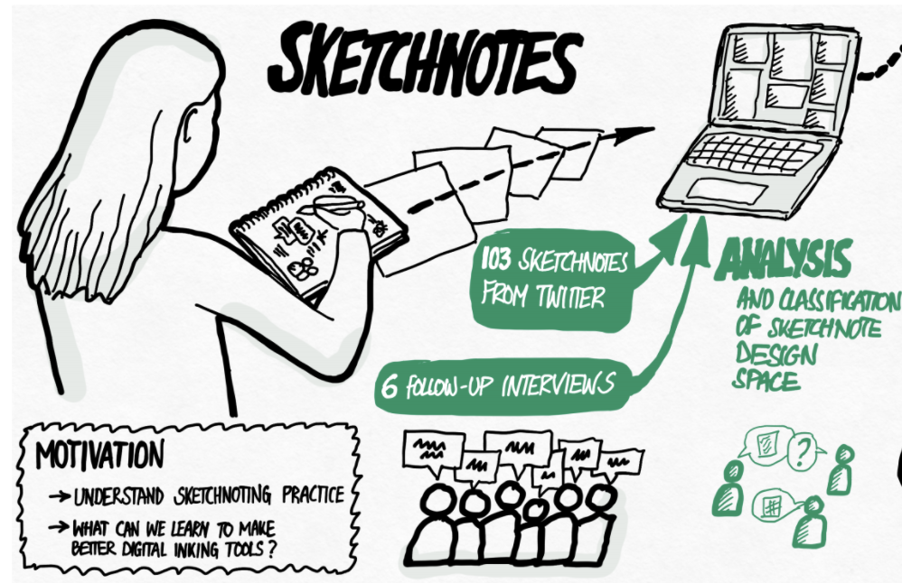

Benjamin Bach, PhD, HDR
Research Scientist
Inria, France
Bivwac team
200 Av. de la vieille Tour
33400 Talence, France
benjamin.bach@inria.fr
Google Scholar
LinkedIn
OrcID: 0000-0002-9201-7744
Full CV
Research & Bio
Publications
Teaching
Visualization Literacy and Education
Visualization literacy is the ability to read, write, and create graphical representations of data using digital or physical artefacts. This is a key asset for any informed use and critical engagement with visual representations of data in every domain of the society; whether this includes the presentation of epidemiological data and model outcomes, the communication of government demographics data and social inequalities, dissemination of research findings, or to allow the public to understand timely issues with climate change or peace and conflict. However, understanding the potential of visualization, mastering its methods and tools as well as critically engaging with data and visualizations can be a challenge to large parts of the population and workforce. As visualization researchers and educators who engage in continuous professional development, public outreach, and applied research projects, we know about these challenges first-hand.
We are researching both, how do people engage with visualizations online and which thoughts do they share, as well as how we can teach novices the fundamentals and tools in data visualization. To that end, we have create visualization cheat sheets and an online course for professionals. We also run the VisActivities Workshop series at IEEE VIS in 2020 and 2021.
We are currently planning and investigating more VisActivities and aim to understand how novices understand novel visualizations and how they navigate interactive visualization environments.
People involved
- Benjamin Bach
- Zezhong Wang
- Arran Ridley
- Sarah Schöttler
- Aba-Sah Dadzie
- Mashael AlKadi
- Uta Hinrichs
Publications


Understanding Barriers to Network Exploration with Visualization: A Report from the Trenches Mashael AlKadi, James Scott-Brown, Vanessa Serrano, Jean-Daniel Fekete, Catherine Plaisant, Uta Hinrichs, Benjamin Bach. IEEE Transactions on Visualization and Computer Graphics (TVCG, IEEE VIS, 2021). (2023).

Teaching Data Visualization and Storytelling with Data Comic Workshops Zezhong Wang, Harvey Dingwal, Benjamin Bach. ACM Conference on Human Factors in Computing Systems (CHI), Extended Abstracts. (2019).

Towards Open-World Scenarios: Teaching the Social Side of Data Science Corneli, Joseph, Dave Murray-Rust, and Benjamin Bach. In Proceedings of Cybernetic Serendipity Reimagined Symposium, Proc. Annual Convention of the Society for the Study of Artificial Intelligence and Simulation of Behaviour (AISB). (2018).


Cheat Sheets for Data Visualization Techniques Zezhong Wang, Lovisa Sundin, Dave Murray-Rust, Benjamin Bach. ACM Conference on Human Factors in Computing Systems (CHI). (2020). [VIDEO]
Understanding the Use of The Vistorian: Complementing Logs with Context Mini-Questionnaires Verena S. Molinero, Benjamin Bach, Catherine Plaisant, Nicole Dufournaud, Jean-Daniel Fekete. Workshop on Visualization for the Digital Humanities IEEE VIS. (2017).